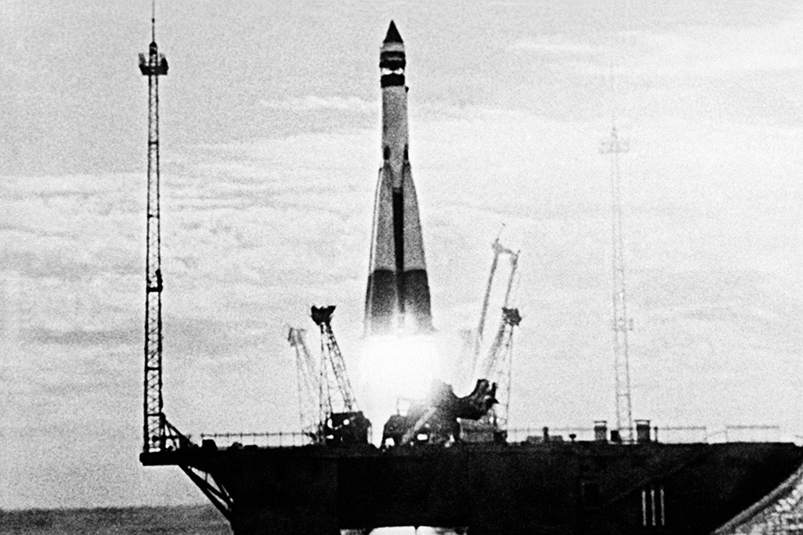
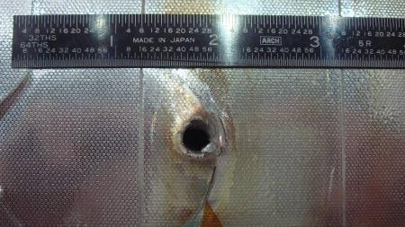
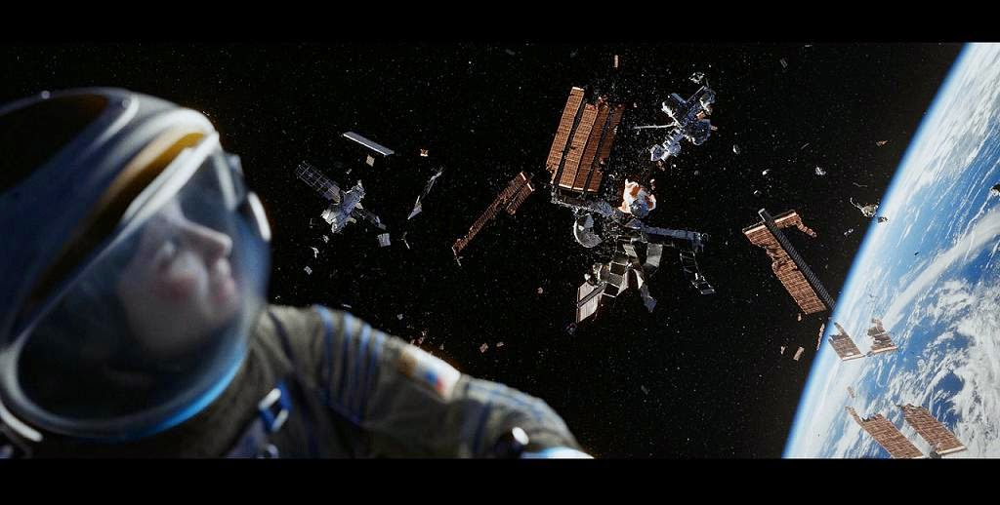
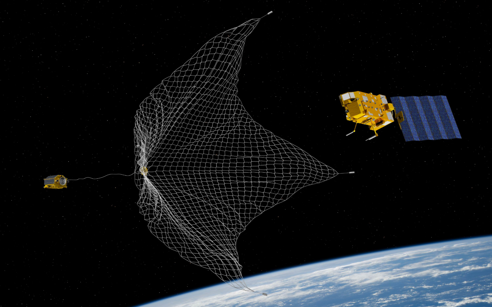
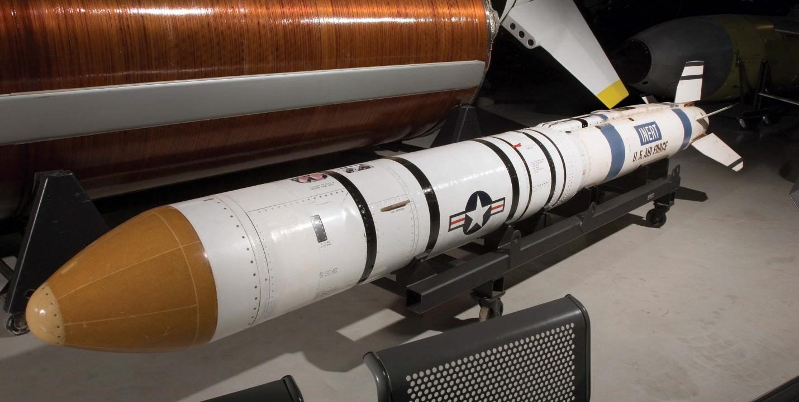
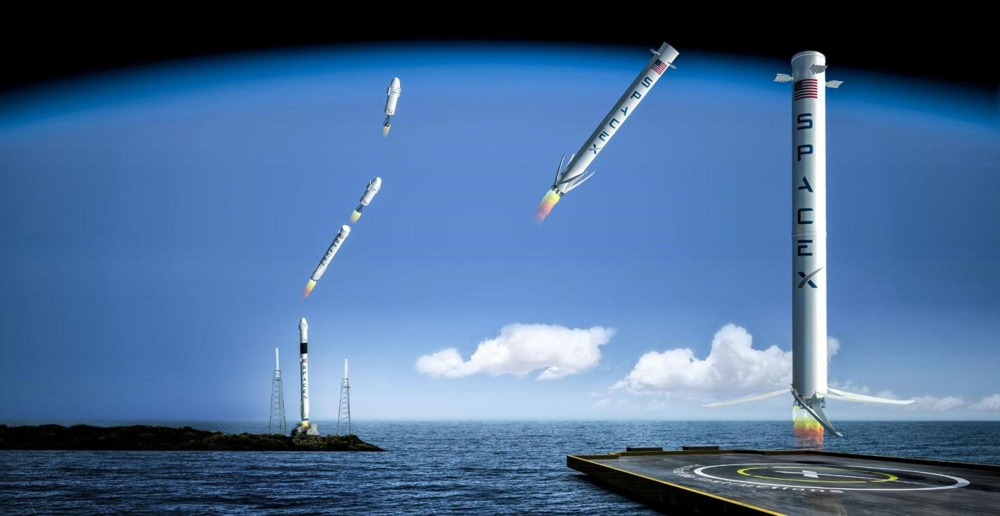

Inson yaralibdiki, tabiatga har qanday yo’l bilan azob berib kelmoqda. Odamlar, hattoki ibtidoiy davrlarda ham tabiatga o’zini ziyonini yetkazmasdan qolmagan. Daraxtlarni kesib, uylar qurish, daryolarni to’sib, to’g’onlar qurish, chiqindilarni yoqib, havoni ifloslash, plastik buyumlarni xohlagan yerga tashlash, tuproqni ifloslash, yerosti boyliklarini qazib olish, hamma hammasi bizga xos. Endi fazoni ham toptamasdan qolmayapmiz. Misol uchun 1957-yil 4-oktabrdan boshlab S.S.S.R Sputnik 1 sun’iy yo’ldoshini uchurishi koinot ifloslanishining dastlabki qadami bo`ldi.
Fazo chiqindilari bu koinotda inson omili bilan chiqarilgan har qanday narsa bo’lishi mumkin. Astronavtlarning asbob-uskunalari, oziq-ovqat qoldiqlari, raketa qoldiqlari, faoliyatdan to’xtagan sun’iy yo’ldoshlar va qandaydir metal bo’laklari o’qdan ham tezroq bo’lgan tezlikda harakatlanib boshqa, hali missiyasi tugamagan, sun’iy yo’ldoshlar, sputniklar, JPS lar, XKS, turli xil kosmik stansiyalarga va undagi astronavtlar hayotiga katta xavf soladi. Chunki bu chiqindilar tezligi, ularga zarar yetkazish qudratini juda ham yuqori qilish uchun imkon beradi. Misol qilib 2019-yil Sentabr oyida diametri 5 sm bo’lgan alumin sharcha Xalqaro Kosmik Stansiyaga kelib urildi va qobig’i qalinligi 20 sm bo’lgan XKS ning birinchi qoplamasini yorib o’tdi.
NASA astronavtlaridan intervyu olinganida, ular har soatda kosmik chiqindilarni stansiyaga kelib urilishini eshitishlarini ta’kidlab o’tishgan. Agarda biror astronavt stansiyadan tashqarida qaysidir missiyani bajarayotgan bo’lsa, fazoviy chiqindilar bilan to’qnashish xavfi bo’lib qolishi mumkin. Bu paytda astronavt kosmik chiqindi bilan to’qnashib stansiyadan ajralib ketib, yer orbitasida yonib ketishi yoki skafanderi teshilib vakuumda kislorodsiz o’lib ketishi mumkin. Qolaversa, stansiyalar, kattaroq xavf soladigan raketa yuqori qismlari yoki interstejlari tomonidan o’ta qattiq zararlanishi yoki portlab undan ham mayda va ko’p bo’laklarga ajralib ketishi mumkin. Yevropa Fazo Agentligi izlanishlari bo’yicha yer orbitasida taxminan 890 million chiqindi qoldiqlari 28164 km/h tezlikda uchib yurganini ma’lum. Tasavvur qiling, anashu chiqindilarning har biri shunchalik qo’rqinchli darajada xavfli bo’lsa, barcha chiqindilarni jamlasak, uning effekti nima bo`ladi?
Tabiiyki, har qanday odamda ,,Bu chiqindilar shunchalik xavfli ekan nega ularni yig’ib olish uchun hech qanday chora ko’rilmayapti?“, - degan savol tug’ilishi aniq. Ammo haqiqatda ham butun dunyo kosmos agentliklari bu haqda tun-u kun bosh qotirmoqdalar. NASA va ESA hamkorlikda chiqindilar muammosini hal qilish missiyalari ustida chuqur izlanishlar o’tkazayotganligini bilamiz. Ularning maqsadi missiyasi tugagan yoki yakulanmasdan buzilib qolgan sun’iy yo’ldoshlarni qayta ishlashga yaroqli joylarini olib boshqa yangi sun’iy yo’ldoshlar yoki raketa qurilishiga ishlatish. Yaroqli bo’lmagan keraksiz chiqindilarni esa orbitani o’zida portlatib yuborib, uni atmosferaga olib kirib, kirish chog’ida atmosferani o’zining yordami bilan yo’q qilib yuborish haqida kelgusi yillarda yangi loyihalar qo’llanishi ko’zda tutadi.
To’g’ri xuddi sizda ham haligacha ko’zga ko’rinadigan yechim amalga oshirilmaydigan-dek. Ammo, allaqachon jahon nigohida bo’lib turgan gigant davlatlar o’zlarining antisatellayt missiyalarini o’tkazib bo’lishgan. Eng yaqindagi 2018-yil dekabr oyidagi shu kabi missiya AQSh tomonidan o’tkazildi. Bu missiyada maxsus reaktiv snaryadlar yerdan turib orbitadagi sun’iy yo’ldosh yoki stansiyani urib tushiriladi. Shu vaqtgacha ko’plab davlatlar bunday raketalar yordamida fazodagi sun’iy yo’ldoshlarni bir qanchasini urib tushirgan. Bularning barchasi anashu muammoni hal qilish yo’lida bajarilayapti. Kelgusi kosmos missiyalarida ,,Artemis’’ va boshqa loyihalarga to’sqinlik qiluvchi bunday chiqindilar darhol yo’q qilinishi kerak.
Bu muammoni hal qilishga yordam beruvchi yana bir juda intensiv yo’l mavjud. Bu chiqindilarni tozlashdan oldin ularni ko’paytirmayotganimizga ishonch hosil qilish kerak. Men bu gapim bilan raketarni maksimal darajada chiqindi chiqarmaydigan qilib yasashimiz kerak. Bu yo’ldan ko’plab raketa bisnesi yetakchilari bo’lmish ,,SpaceX’’, ,,Blue Origin’’ va boshqa kompaniyalar allaqachon qayta ishlatib bo’ladigan raketalarni ommaga havola qilib bo’lishgan. ,,SpaceX’’ ning ,,Falcon’’ nomli va ,,Blue Origin’’ ning ,,Shephard’’ nomli raketalarini misol qilib keltira olamiz. Ular to’laqonli tabiatga beziyon va 100 foiz qayta uchirsa bo’ladigan raketalardir. Bulardan boshqa shu bisnesdagi ko’plab kompaniyalar ham bunday texnologiyani yaratib bo’lishgan.
Bunday mamlakatlar qatorida O’zbekiston ham yaqin kelajakda o’z o’rnini topadi deb umid qilamiz. Buning uchun bizda deyarli hamma shart-sharoitlar yaratilmoqda va shu sohadagi yetarli mutaxasislar ham yoshlarimiz ichida shakllanib kelishi aniq. Ishonchimiz komil-ki O’zbekiston o’zining fazoga qo’ygan birinchi qadamini unga zarar keltirmasdan koinotni o’z holicha o’rganishni boshlaydi. Kelgusi 20 yil ichida shuni aniq ayta olamanki O’zbekiston kosmosni tadqiq etish sohasida birinchi o’ringa chiqib oladi. Buning ustida biz yoshlar chet el tajribasini o’rgangan holda ularning kamchilik va xatolarini qaytarmasdan fazoni chekka nuqtalarigacha o’rganuvchi kompaniyalar tuzishni rejalashtirishimiz zarur. hali kosmosga chiqmagan bo’lsak-da, biz koinotni o’rganishimiz va uning yangi qirralarini tadqiq etishdagi yo’limiz juda ham oson kechadi. Chunki bizda chet el tajribalari va ularning xato-kamchiliklari bor. Ular bilan bizning koinotni o’rganishga ketadigan kuchimiz va qiyinchiliklarimiz juda ham osonlik bilan yengib o’tiladi.
Authors: Orziqulov Jahongir, Sherqulov Ulug’bek
Editors : Orziqulov Jahongir, Sherqulov Ulug’bek